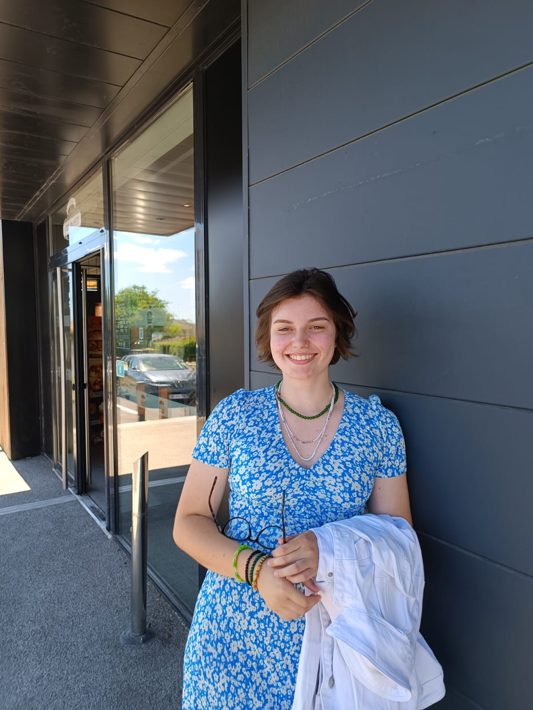

Recherche Alternance
A propos
Je suis Tiffany Gomez, développeuse web à la recherche d'une alternance. Passionnée par la technologie, je possède de solides compétences en HTML, CSS, JavaScript et Python, ainsi qu'une expérience de gestion de bases de données et d'interfaces utilisateur.
